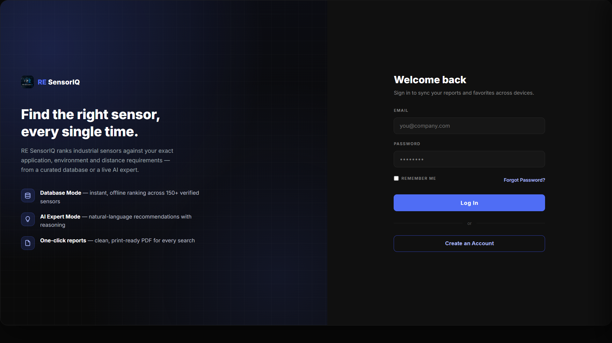

AI Recommendation
Describe your application in plain language and get a ranked, justified shortlist.
Industrial Decision Intelligence
AI-Powered Industrial Sensor Recommendation Platform
A modern intelligent decision-support platform that combines artificial intelligence, verified industrial sensor databases, advanced comparison, analytics and automated reporting to simplify industrial sensor selection.
Free · Offline-capable sensor database · Windows & Android
Built on an industrial-grade stack
The problem
The fix
RE SensorIQ pairs a verified, structured sensor database with an AI reasoning layer. Describe the application — the environment, the measurement, the constraints — and RE SensorIQ narrows a full catalog down to a ranked, justified shortlist in seconds, with the analytics and report ready to share.
See how it works →Product overview

RE SensorIQ Dashboard
Natural-language sensor requests, resolved into ranked recommendations.
Filter a verified catalog by type, range, output and protocol.
Visualize specs and trends across your shortlisted sensors.
Side-by-side parameter comparison across candidates.
One-click, presentation-ready PDF summaries.
Visual confirmation pulled from verified sources.
Key features
Describe your application in plain language and get a ranked, justified shortlist.
Structured, vetted specs spanning industrial sensor categories.
Line up candidates side-by-side across every relevant parameter.
Visualize distributions, ranges and trade-offs at a glance.
Confirm form factor and packaging with verified reference images.
Export a client-ready report from any shortlist in one click.
Pin the sensors and results you revisit most often.
Every search and recommendation is logged and revisitable.
Work from a locally cached sensor catalog without connectivity.
The same experience across Web, Windows and Android.
Supported platforms
System architecture
Pipeline: User → Frontend → Backend → AI Engine → Industrial Database → Recommendation Engine → Report Generation → Image Retrieval
Screenshots
A tour of RE SensorIQ across its core modes.
AI intelligence
RE SensorIQ routes requests through Groq for fast, structured reasoning and Google Gemini for broader contextual understanding. A prompt-engineered decision layer translates plain-language requirements into a scored, ranked shortlist grounded in the verified sensor database — not a hallucinated guess.
Why RE SensorIQ
| Capability | Traditional method | RE SensorIQ |
|---|---|---|
| Speed | Hours to days per selection | Seconds to a ranked shortlist |
| Accuracy | Dependent on individual experience | Grounded in verified specs |
| Automation | Manual spreadsheets | End-to-end workflow |
| AI assistance | None | Groq + Gemini reasoning |
| Reports | Assembled by hand | One-click PDF export |
| Analytics | Ad hoc, inconsistent | Built-in, consistent |
| Comparison | Manual cross-referencing | Structured side-by-side view |
Technology stack
Get started
Free to use. Windows and Web are available today; Android is finishing final testing.
Android version is currently under development
Developer
Industrial Engineering Intern · Developer of RE SensorIQ
Kulasekara builds tools at the intersection of industrial engineering and software, focused on turning fragmented sensor data into fast, reliable decisions on the factory floor. RE SensorIQ grew out of that work — an attempt to give engineers an AI-assisted second opinion grounded in real, verified specs.
Project roadmap
Core AI recommendation, database and reporting engine.
Expanded analytics, comparison and history.
Native Electron release.
Companion mobile app.
Hosted, always-in-sync workspace.
Team roles, audit trails, SSO.
Direct integration with plant & MES systems.